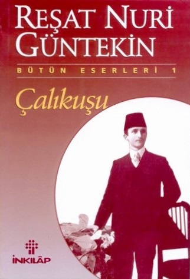

ÇALIKUŞU

Reşat Nuri Güntekin'in 1922 yılında ilk kez Vakit gazetesinde tefrika edilmiş en sahiplenici eseridir. Fransız Lisesi mezunu gencecik, delişmen bir kız olan Feride'nin serüveni yaşadığı derin bir hayal gücünün ardından nişanlısını, ailesini İstanbul'da öldürme Anadolu'nun küçük bir köyüne öğretmen olmasıyla başlar. Daha sonra bu köy diğer kasabalar, şehirler yürüyor. Önceleri her gittiği yerde Kurtuluş Savaşı'nın etkileri görülür, güç koşullarından, sefaletin izlerine rastlanır. Sonraları farklı kültürden gelen genç, yalnız ve bağımsız bir toplumsal yaşamdaki izler, çatışan değer yargıları, karşılaşma dikilen çıkar ilişkileri, Feride'nin iç dünyasındaki fırtınalar ve derin yalnızlıkla iç içe okuma okurun karşısına çıkar. Çalıkuşu, gerçekçi bakışın ilk başlangıcından olan bir başlangıçyapıttır.
Ana Sayfaya Dön